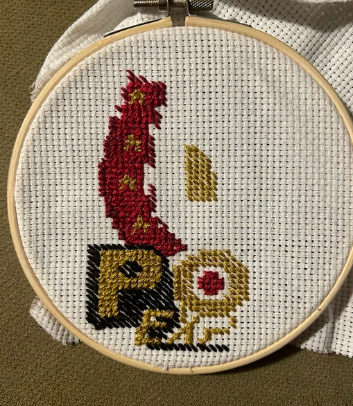
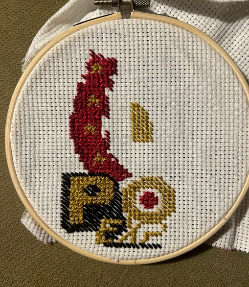

Fabrication Process
 

After sourcing a set of blue coveralls, I started the cross-stitch patch to put on the breastpocket. I made the patch separately, but only did the black stitches in one direction. I then finished the cross-stitch by sewing it onto the breastpocket, adding a golden border to hide the parts of the patch fabric I wasn't able to completely cut away.
Because the rest of the costume was sourced, I didn't make much else to include. I printed out a copy of Anya's ID card, which I put on my keychain over my own ID card, which was used to tap in and out of my college dorm. I also got an old pill bottle and put mouthwash and a small plastic baby in it as a prop, and emptied a bottle of Listerene then filled it with something I could drink as a second prop for photos.